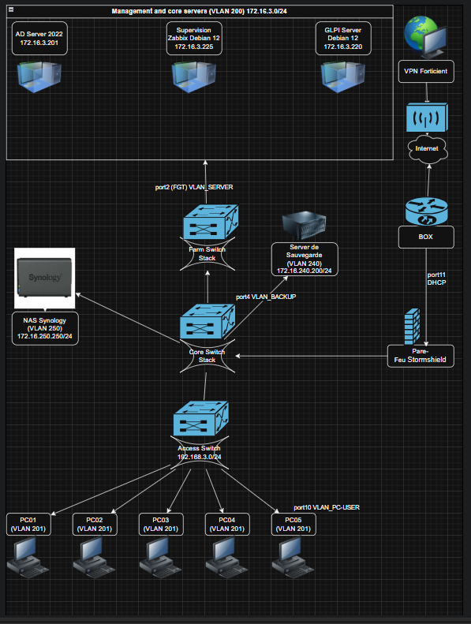

1. Annexe 9-1-A — Fiche descriptive
HORACE cemerson
- Nom du projet
- Conception et déploiement d’une infrastructure réseau sécurisée
- Contexte
- Mise en œuvre d'une infrastructure réseau complète pour une Entreprise (segmentation, serveurs, sécurité)
- Période
- Septembre 2025 — Juin 2026
- Rôles
- Administrateur réseau — conception, déploiement, sécurisation et supervision
- Outils
- Windows Server 2022, Debian, Stormshield, Excel, Synology, Zabbix, GLPI
2. Contexte professionnel
HORACE cemerson
Entreprise : CYBER CEMH SARL. L'entreprise dispose d'environ 50 postes et souhaite moderniser son infrastructure réseau. Le projet vise à segmenter le réseau via VLAN, centraliser l'authentification, déployer des services assurer la supervision et mettre en place un plan de sauvegarde en.
3. Schéma et plan d'adressage
HORACE cemerson
.

Plan d'adressage & VLAN
| VLAN | Description | Réseau | Exemple d'adresse |
|---|---|---|---|
| 20/200 | Postes utilisateurs (PC_USER) | 192.168.3.0/24 | PC01 — 192.168.3.10 |
| 200 | Serveurs | 172.16.3.0/24 | AD — 172.16.3.222 |
| 202 | Sauvegarde | 172.16.2.0/24 | Backup — 172.16.2.200 |
| 205 | NAS | 172.16.5.0/24 | NAS — 172.16.5.254 |
Liste des serveurs (extraits)
| Nom | IP | OS / Service |
|---|---|---|
| AD Server | 172.16.3.222 | Windows Server 2022 — Active Directory, DNS |
| GLPI | 172.16.3.220 | Debian 10 — GLPI + MariaDB |
| NAS Synology | 172.16.5.254 | Stockage & sauvegardes |
4. Description matérielle et logicielle
HORACE cemerson
Matériel :
- Commutateurs empilables (Core / Farm / Access)
- Pare-feu Stormshield
- NAS Synology
Logiciels :
- Windows Server 2022 (AD, DNS, DHCP)
- Debian 12 ( GLPI, Zabbix, Asterisk)
- Zabbix, GLPI
5. Documentation technique détaillée
Procédures, scripts et extraits
Extrait : script PowerShell de création d'utilisateurs
# Exemple : Create-ADUsers.ps1
Import-Module ActiveDirectory
$users = Import-Csv users.csv
foreach($u in $users){
New-ADUser -Name $u.Name -GivenName $u.Given -Surname $u.Surname -SamAccountName $u.Username -AccountPassword (ConvertTo-SecureString $u.Password -AsPlainText -Force) -Enabled $true
}